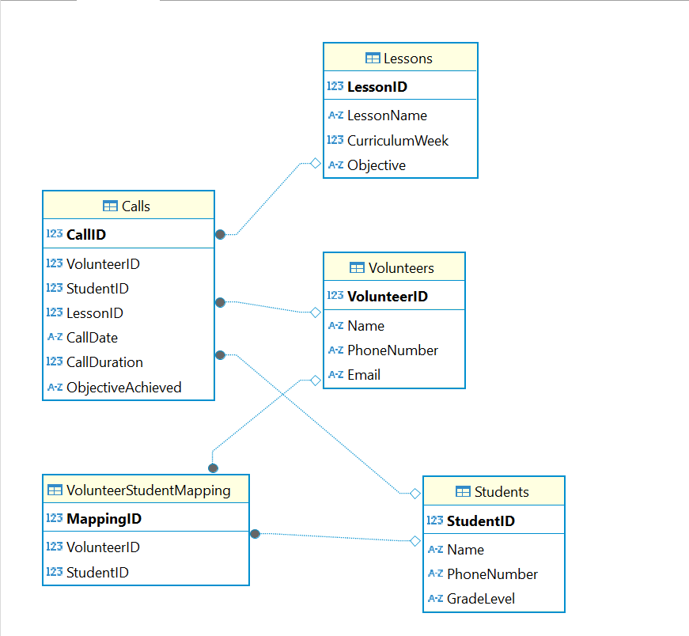

Create a data model (aka entity relationship diagram) that will enable this client to answer the above key
questions. See sample datamodel in Part 2 above. Use any tool you are comfortable with. Most Goalkeep
data models are built using diagrams.net. A photo of a pen & paper diagram will do just fine.
